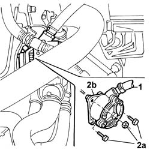
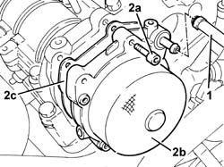

3330D30 vacuum pump - r+r
- Path
- Procedures > 33 BRAKES > 3330 HYDRAULIC BRAKING SYSTEM > 3330D BRAKE VACUUM SYSTEM > 3330D30 vacuum pump - r+r
- Kind
- repair procedure (removal / refitting; the operation number is the code)
- Applies to
- engines: 2.4 JTD 10V, 2.4 JTD 20V; all production periods
- Interactive page
- https://sloeber94.github.io/elrnDB-lThss/en/#/78626
Applies to: engines: 2.4 JTD 10V; all production periods
 Removing
Removing
 Refitting
RefittingSee in Op. 1016A10 SOUND-PROOFING COVER - R.R.
See in Op. 1048A50 air inlet pipe to turbocharger - r + r
1. Disconnect the vacuum intake pipe from the vacuum pump.
2. Undo the fixing bolts (2a) and remove the vacuum pump (2b) complete with O-ring.

Applies to: engines: 2.4 JTD 10V; all production periods
- Replace the O-ring before refitting.
- Fit the vacuum pump in its housing on the cylinder head and tighten to torque.
 | Value - daNm | Fastening | Component | Ø |
|---|---|---|---|---|
. | 2.5 | Bolt | BRAKING SYSTEM BRAKES | M8 |
- Connect the vacuum intake pipe to the vacuum pump.
Applies to: engines: 2.4 JTD 20V; all production periods
Removing
RefittingSee in Op. 7040D50 ENGINE COMPARTMENT UPPER SOUND INSULATION SHIELD - R.R.
See in Op. 1016A10 SOUND-PROOFING COVER - R.R.
See in Op. 1048B44 RIGID air supply PIPE from heat exchanger to intake manifold - R.R.
1. Disconnect the vacuum intake pipe from the vacuum pump.
2. Undo the fixing bolts (2a) and remove the vacuum pump (2b) complete with seal (2c).

Applies to: engines: 2.4 JTD 20V; all production periods
Refitting
Removing- Replace the seal before refitting.
- Fit the vacuum pump in its housing on the cylinder head and tighten to torque.
| Value - daNm | Fastening | Component | Ø |
|---|---|---|---|---|
. | 2.5 | Bolt | BRAKING SYSTEM BRAKES | M8 |
- Connect the vacuum intake pipe to the vacuum pump.
See in Op. 1048B44 RIGID air supply PIPE from heat exchanger to intake manifold - R.R.
See in Op. 1016A10 SOUND-PROOFING COVER - R.R.
See in Op. 7040D50 ENGINE COMPARTMENT UPPER SOUND INSULATION SHIELD - R.R.
Topics linked from this page (5)
- 1016A10 SOUND-PROOFING COVER - R.R.
- 1016A10 SOUND-PROOFING COVER - R.R.
- 1048B44 RIGID air supply PIPE from heat exchanger to intake manifold - R.R.
- 1048A50 air inlet pipe to turbocharger - r + r
- 7040D50 ENGINE COMPARTMENT UPPER SOUND INSULATION SHIELD - R.R.